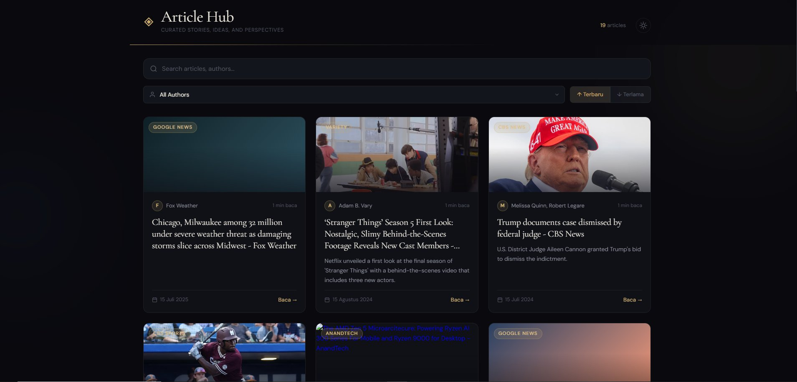
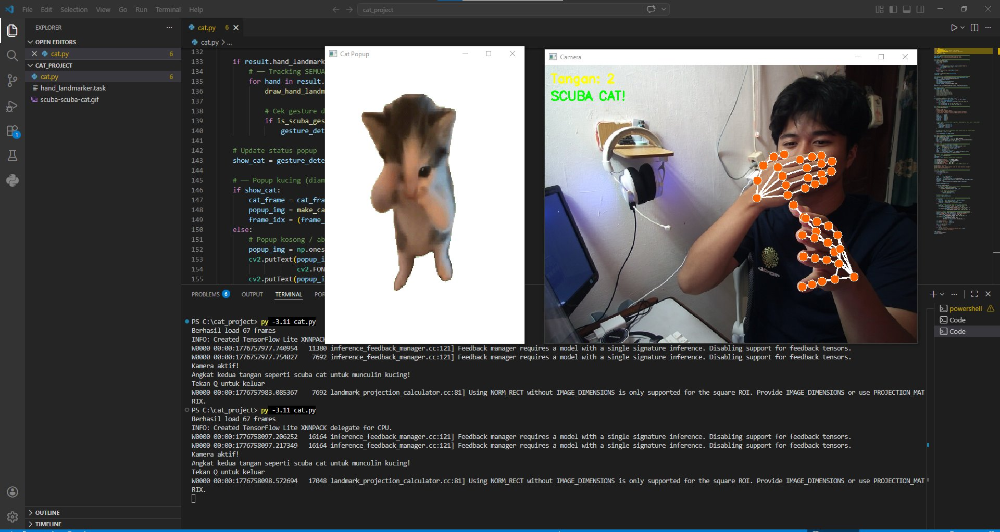
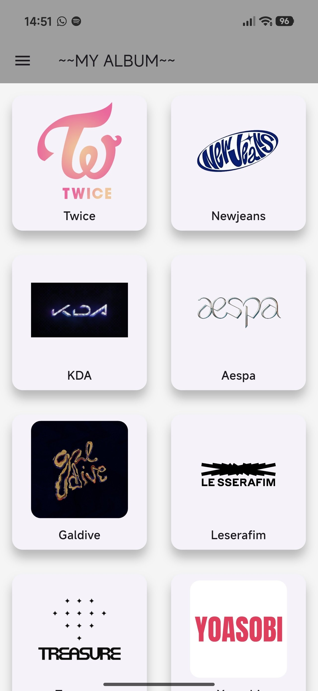
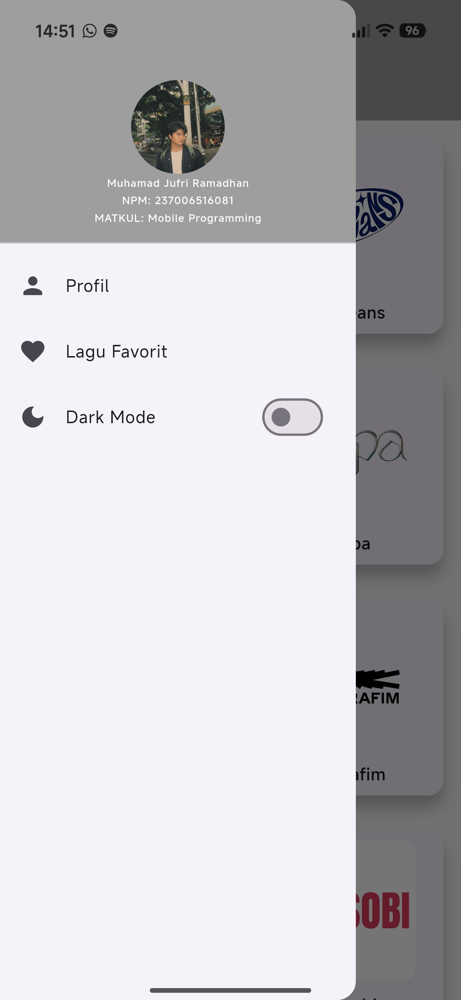
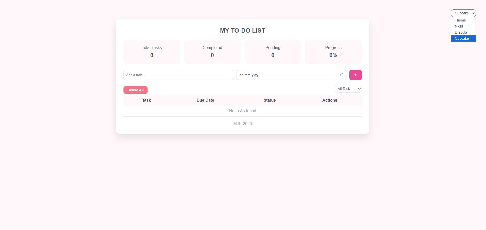

Web Developer yang membangun pengalaman digital yang fungsional, estetis, dan berdampak. Dari konsep hingga kode clean, scalable, dan penuh perhatian pada detail.
Lihat ProyekHaii Semua Saya Muhamad Jufri Ramadhan, seorang Web Developer yang bersemangat dalam menciptakan solusi digital yang tidak hanya bekerja dengan baik tetapi juga terlihat dan terasa luar biasa.
Dengan keahlian di sisi frontend, saya menggabungkan logika pemrograman yang solid dengan kepekaan desain yang kuat. Setiap baris kode yang saya tulis memiliki tujuan.
Saya percaya bahwa teknologi terbaik adalah yang tidak terlihat ia cukup intuitif sehingga pengguna hanya merasakan pengalaman yang mulus, bukan kerumitannya.

Platform Gibah artikel berbasis web dengan tampilan kartu dark-theme. Fitur pencarian artikel, filter berdasarkan penulis, pengurutan terbaru/terlama, serta integrasi feed dari berbagai sumber berita. UI modern dengan dukungan beberapa artikel dari berbagai kategori.

Aplikasi computer vision berbasis Python yang mendeteksi gestur tangan "scuba cat" secara real-time menggunakan MediaPipe dan OpenCV. Saat gestur terdeteksi, animasi GIF kucing muncul sebagai pop-up.


Aplikasi mobile Android untuk koleksi album musik K-Pop favorit. Menampilkan grid album artis (TWICE, NewJeans, aespa, dll), halaman profil pengguna, fitur lagu favorit, serta toggle dark mode. Dibangun sebagai tugas mata kuliah Mobile Programming.

Aplikasi to-do list berbasis web dengan statistik task real-time (total, selesai, pending, progress %), input tugas + due date, filter status, dan dukungan multi-tema (Night, Dracula, Cupcake). Data tersimpan lokal di browser.
Punya proyek menarik? Saya selalu terbuka untuk diskusi tentang peluang baru, kolaborasi kreatif, atau sekadar ngobrol soal teknologi. Jangan ragu untuk menghubungi saya.
muhammadjufriramadhan233@email.com